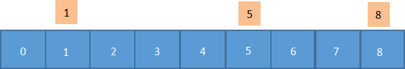
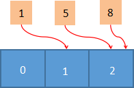
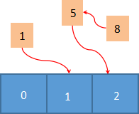

Redis hash哈希散列（图解）
Redis hash（哈希散列）是由字符类型的 field（字段）和 value 组成的哈希映射表结构（也称散列表），它非常类似于表格结构。在 hash 类型中，field 与 value 一一对应，且不允许重复。
Redis hash 特别适合于存储对象。一个 filed/value 可以看做是表格中一条数据记录；而一个 key 可以对应多条数据。下面举一个例子，使用 hash 类型存储表格中的数据，这里以
命令实例演示：
通过上述方法，我们就把表格中的数据存储在了内存中。Redis hash 的存储结构如下图所示：

图1：hash存储结构图
一个 hash 类型的 key 最多可以存储 2^32-1（约 40 亿个）字段/值。同时 Redis hash 会为这个 key 额外储存一些附加的管理信息，比如这个键的类型、最后一次访问这个键的时间等，所以 hash 键越来越多时，Redis 耗费在管理信息方面的内存就越多。当 hash 类型移除最后一个元素后，该存储结构就会被自动删除，其占用内存也会被系统回收。
第一种，当存储的数据量较少的时，hash 采用 ziplist 作为底层存储结构，此时要求符合以下两个条件：
当无法满足上述条件时，hash 就会采用第二种方式来存储数据，也就是 dict（字典结构），该结构类似于 Java 的 HashMap，是一个无序的字典，并采用了数组和链表相结合的方式存储数据。在 Redis 中，dict 是基于哈希表算法实现的，因此其查找性能非常高效，其时间复杂度为 O(1)。
哈希表又称散列表，其初衷是将数据映射到数组中的某个位置上，这样就能够通过数组下标来访问该数据，从而提高数据的查找效率。下面通过一个示例，了解一下到底什么是哈希表。
现在有 1/5/8/ 三个数字，你需要把这三个数字映射到数组中，由于哈希表规定必须使用下标来访问数据，因此你需要构建一个 0 到 8 的数组，如下所示：
如上图所示，我们把待查找的数字，在相应的下标数组上标记出来，它们之间一一对应。虽然这样做能实现元素的查找，但却很浪费存储空间，并且查找效率也不高。而如果采用哈希表的话，我们只需要申请一个长度为 3 的数组（与待查找的元素个数相同），如下图所示：
将 1/5/8 分别对数组长度 3 做取模运算，然后把它们指向运算结果对应的数组槽位，这样就把一组离散的数据映射到了连续的空间中，从而在最大限度上提高了空间的利用率，并且也提高了元素的查找效率。但是你可能会发现一个问题，数字 5、8 竟然映射到同一个槽位上，这样就导致其中一个数字无法查找到。上述这种情况在实际中也会遇到，我们把它称为“哈希冲突”或者“哈希碰撞”。
有许多方法可以解决“哈希冲突”，比如开放地址法、链表地址法，再次散列法等，而 Redis 采用是链表地址法。这里我们只对链表地址法做简单介绍，很容易理解，这种方法就是将有冲突的数据使用链表把它们串联起来，这样即使发生了冲突，也可以将数据存储在一起，最后，通过遍历链表的方式就找到上述发生“冲突”的数据。如下所示：
查看更多命令：https://redis.io/commands
Redis hash 特别适合于存储对象。一个 filed/value 可以看做是表格中一条数据记录；而一个 key 可以对应多条数据。下面举一个例子，使用 hash 类型存储表格中的数据，这里以
user为 key， id:1为字段，name:Cao为 value：| id | name |
|---|---|
| 1 | Cao |
| 2 | Zhao |
#以user为key，设置 id+序号为字段，name+名字为值 127.0.0.1:6379> HMSET user id:1 name:Cao id:2 name:Zhao OK # 查询 user 这个key下所有的数据，并以字符串的形式将值返回 127.0.0.1:6379> HGETALL user 1) "id:1" 2) "name:Cao" 3) "id:2" 4) "name:Zhao"注意：当我们对 value 进行查询时，这个值只能以字符串的形式返回。
通过上述方法，我们就把表格中的数据存储在了内存中。Redis hash 的存储结构如下图所示：
图1：hash存储结构图
一个 hash 类型的 key 最多可以存储 2^32-1（约 40 亿个）字段/值。同时 Redis hash 会为这个 key 额外储存一些附加的管理信息，比如这个键的类型、最后一次访问这个键的时间等，所以 hash 键越来越多时，Redis 耗费在管理信息方面的内存就越多。当 hash 类型移除最后一个元素后，该存储结构就会被自动删除，其占用内存也会被系统回收。
初识hash类型
hash 类型是 Redis 常用数据类型之一，其底层存储结构有两种实现方式。第一种，当存储的数据量较少的时，hash 采用 ziplist 作为底层存储结构，此时要求符合以下两个条件：
- 哈希对象保存的所有键值对（键和值）的字符串长度总和小于 64 个字节。
- 哈希对象保存的键值对数量要小于 512 个。
当无法满足上述条件时，hash 就会采用第二种方式来存储数据，也就是 dict（字典结构），该结构类似于 Java 的 HashMap，是一个无序的字典，并采用了数组和链表相结合的方式存储数据。在 Redis 中，dict 是基于哈希表算法实现的，因此其查找性能非常高效，其时间复杂度为 O(1)。
哈希表又称散列表，其初衷是将数据映射到数组中的某个位置上，这样就能够通过数组下标来访问该数据，从而提高数据的查找效率。下面通过一个示例，了解一下到底什么是哈希表。
现在有 1/5/8/ 三个数字，你需要把这三个数字映射到数组中，由于哈希表规定必须使用下标来访问数据，因此你需要构建一个 0 到 8 的数组，如下所示：

如上图所示，我们把待查找的数字，在相应的下标数组上标记出来，它们之间一一对应。虽然这样做能实现元素的查找，但却很浪费存储空间，并且查找效率也不高。而如果采用哈希表的话，我们只需要申请一个长度为 3 的数组（与待查找的元素个数相同），如下图所示：

将 1/5/8 分别对数组长度 3 做取模运算，然后把它们指向运算结果对应的数组槽位，这样就把一组离散的数据映射到了连续的空间中，从而在最大限度上提高了空间的利用率，并且也提高了元素的查找效率。但是你可能会发现一个问题，数字 5、8 竟然映射到同一个槽位上，这样就导致其中一个数字无法查找到。上述这种情况在实际中也会遇到，我们把它称为“哈希冲突”或者“哈希碰撞”。
有许多方法可以解决“哈希冲突”，比如开放地址法、链表地址法，再次散列法等，而 Redis 采用是链表地址法。这里我们只对链表地址法做简单介绍，很容易理解，这种方法就是将有冲突的数据使用链表把它们串联起来，这样即使发生了冲突，也可以将数据存储在一起，最后，通过遍历链表的方式就找到上述发生“冲突”的数据。如下所示：

如果值是字符串的话，就需要通过哈希函数将字符串转换成具体的数值，然后再对其进行映射。关于哈希函数这里不做过多介绍，如果感兴趣可以自行研究。
常用命令汇总
| 命令 | 说明 |
|---|---|
| HDEL key field2 [field2] | 用于删除一个或多个哈希表字段。 |
| HEXISTS key field | 用于确定哈希表字段是否存在。 |
| HGET key field | 获取 key 关联的哈希字段的值。 |
| HGETALL key | 获取 key 关联的所有哈希字段值。 |
| HINCRBY key field increment | 给 key 关联的哈希字段做整数增量运算 。 |
| HINCRBYFLOAT key field increment | 给 key 关联的哈希字段做浮点数增量运算 。 |
| HKEYS key | 获取 key 关联的所有字段和值。 |
| HLEN key | 获取 key 中的哈希表的字段数量。 |
| HMSET key field1 value1 [field2 value2 ] | 在哈希表中同时设置多个 field-value(字段-值） |
| HMGET key field1 [field2] | 用于同时获取多个给定哈希字段（field）对应的值。 |
| HSET key field value | 用于设置指定 key 的哈希表字段和值（field/value）。 |
| HSETNX key field value | 仅当字段 field 不存在时，设置哈希表字段的值。 |
| HVALS key | 用于获取哈希表中的所有值。 |
| HSCAN key cursor | 迭代哈希表中的所有键值对，cursor 表示游标，默认为 0。 |
基本命令操作
示例演示：微博上好友关注时间的场景，这里以用户 ID 作为 key（user:10），field 字段表示好友的 ID，value 则代表好友关注用户（user:10）的时间。#设置单个字段 127.0.0.1:6379> HSET user:10 user:1 20201001 (integer) 1 #同时设置多个字段 127.0.0.1:6379> HMSET user:10 user:2 20201002 user:3 20201004 user:4 20201018 OK #查询单个字段 127.0.0.1:6379> HGET user:10 user:2 "20201002" #查询所有字段 127.0.0.1:6379> HGETALL user:10 1) "user:1" 2) "20201001" 3) "user:2" 4) "20201002" 5) "user:3" 6) "20201004" 7) "user:4" 8) "20201018" 127.0.0.1:6379> HKEYS user:10 1) "user:1" 2) "user:2" 3) "user:3" 4) "user:4" #返回字段个数 127.0.0.1:6379> HLEN user:10 (integer) 4 #返回所有字段值 127.0.0.1:6379> HVALS user:10 1) "20201001" 2) "20201002" 3) "20201004" 4) "20201018" #迭代hash的key键 127.0.0.1:6379> HSCAN user:10 0 1) "0" 2) 1) "user:1" 2) "20201001" 3) "user:2" 4) "20201002" 5) "user:3" 6) "20201004" 7) "user:4" 8) "20201018" #判断字段是否存在，存在返回1，不存在返回0 127.0.0.1:6379> HEXISTS user:10 user:4 (integer) 1 127.0.0.1:6379> HEXISTS user:10 user:5 (integer) 0在线练习工具：https://try.redis.io/
查看更多命令：https://redis.io/commands
关注公众号「站长严长生」，在手机上阅读所有教程，随时随地都能学习。内含一款搜索神器，免费下载全网书籍和视频。

微信扫码关注公众号